금형제작기능장 (2008-03-30 기출문제)
1과목: 임의 구분
1. 다음 중 기능에 따른 유압 제어 밸브의 종류가 아닌 것은?
- 방향제어밸브
- 회로지시밸브
- 압력제어밸브
- 유량제어밸브
(정답률: 알수없음)

2. 유압 실린더의 호칭에 표시하지 않아도 되는 것은?
- 호칭 압력
- 스트로크 길이
- 튜브 안지름
- 실린더 외경
(정답률: 알수없음)
3. 다음 공유압 회로에 대한 용어로 옳은 것은?
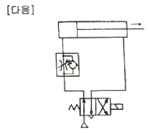
- 미터 인 회로
- 미터 아웃 회로
- 블리드 오프 회로
- 오어 회로
(정답률: 알수없음)
4. 공기의 공급량(체적 유량)이 일정할대, 지름 6mm인 공압 호스를 지름 10mm로 바꾸었다면 공기의 속도는 처음 속도의 몇 배로 되는가? (단, 공기는 비압축성이고 흐름은 정상류이다.)
- 0.36배
- 2.78배
- 0.65배
- 1.67배
(정답률: 알수없음)
5. 다음은 유압장치의 각 기구에 대한 설명이다. 틀린 것은?
- 오일 필터는 회로에 공급되는 유압유 내에 함유되어 있는 불순물을 여과한다.
- 릴리프 밸브는 회로의 최고압력을 제한하는 밸브로서 회로의 압력을 일정하게 유지시킨다.
- 어큐뮬레이터는 밸브의 개폐 등에 의한 충격압력을 흡수하며 맥동압을 제거한다.
- 무부하 밸브는 어큐뮬레이터의 브릿지를 조정한다.
(정답률: 알수없음)
6. 2~3% Be을 첨가한 구리 합금으로 시효 경화성이 있으며, 구리 합금 중에서 가장 큰 강도와 경도를 가지며, 내마멸성, 탄성, 전도율이 우수하므로 베어링, 고급스프링 등으로 사용되는 구리 합금은?
- 코슨 합금
- 규소 청동
- 베릴륨 동
- 망간 동
(정답률: 알수없음)
7. 6:4 황동에 1~2% Fe을 첨가한 고강도의 황동은?
- 엘린바
- 네이벌 황동
- 델타메탈
- 애드미럴티 황동
(정답률: 알수없음)
8. 탄소강에 함유된 망간의 영향과 거리가 먼 것은?
- 고온에서 거칠어지는 것을 감소시킨다.
- 고온가공은 용이하나 냉간가공에는 불리하다.
- 담금질 효과를 증대시킨다.
- 강도를 감소시키고 연성을 증가시킨다.
(정답률: 알수없음)
9. 시험편의 인장시험에서 초기 단면적이 0.2cm2 이고, 단면 수축율이 25%로 계산되었다면 파괴되기 직전의 최소 단면적은 몇 cm2 인가?
- 0.15
- 0.12
- 0.⑤
- 0.19
(정답률: 알수없음)
10. 철(Fe)-탄소(C) 복합형 상태도에서 공석(0.8%C)강의 조직은?
- 페라이트
- 펄라이트
- 오스테나이트
- 시멘타이트
(정답률: 알수없음)
11. 다음 중 황동에서 나타나는 화학적 성질이 아닌 것은?
- 고온 탈아연
- 저온풀림연화
- 탈아연 부식
- 자연균열
(정답률: 알수없음)
12. 다음 중 주조된 상태에서 구상 흑연 주철의 조직이 아닌 것은?
- 페라이트
- 펄라이트
- 불스아이(페라이트+펄라이트)
- 마텐자이트
(정답률: 알수없음)
13. 사출성형품에 발생한 기포를 방지하기 위한 대책이 아닌 것은?
- 사출압력을 내린다.
- 윤활제나 이형제의 과다한 사용을 피한다.
- 수지를 충분히 건조 시킨다.
- 캐비티 내의 공기빼기를 충분히 한다.
(정답률: 알수없음)
14. 사출성형기의 형체력을 설명한 것이다. 옳은 것은? (단, P(kgf/cm2) : 캐비티 내의 단위 면적당 평균압력, A(cm2) : 캐비티 내의 투영면적 , F(ton) : 형체력)
- F ≧ P + A × 10-3
- F ＜ P + A × 10-3
- F ＜ P × A × 10-3
- F ≧ P × A × 10-3
(정답률: 알수없음)
15. 다음 중 싱크마크(sink mark)에 대한 설명이 옳은 것은?
- 성형품의 표면에 부분적으로 발생하는 오목현상이다.
- 용융 수지가 금형 캐비티 내에 충전되면서 유통 궤적이 생겨 나타나는 현상이다.
- 성형품의 일부분이 성형되지 않는 현상이다.
- 용융된 수지가 금형 캐비티 내에서 분류하였다가 합류하는 부분에 생기는 가느다란 선모양이다.
(정답률: 알수없음)
16. 핀 포인트 게이트의 특징이 아닌 것은?
- 게이트의 위치 선정이 자유롭다.
- 게이트 부근에서 잔류응력이 많다.
- 게이트가 자동적으로 절단된다.
- 수축 및 변형을 적게 할 수 있다.
(정답률: 알수없음)
17. 사출금형 설계시 파팅 라인(parting line)을 정하는데 유의사항이 아닌 것은?
- 마무리가 잘 될 수 있는 위치 또는 형상으로 한다.
- 언더컷을 피할 수 있는 구조로 한다.
- 눈에 잘 보이는 위치 또는 형상으로 한다.
- 금형 열림 방향에 수직인 평면으로 한다.
(정답률: 알수없음)
18. 상자 또는 뚜껑을 사출성형으로 가공 하고자 한다. 성형품 높이가 50mm 까지인 경우 빼기구배를 얼마로 하는 것이 좋은가?
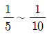
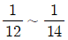
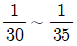
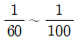
(정답률: 알수없음)
19. 사출성형 후 스프루를 스프루부시 밖으로 당겨 빼는 기능을 가진 금형 부품은?
- 슬라이드 핀
- 스프루 가이드 핀
- 스프루 로크 핀
- 스프루 로킹 블록
(정답률: 알수없음)
20. 다음은 프레스 가공에서 다이를 분할 할 때의 검토 사항이다. 가장 옳은 것은?
- 분할점에서 분할선의 방향은 절단윤곽의 곡선 또는 예각으로 한다.
- 국부적으로 이상한 요철이 있을 때는 일체형 다이를 사용한다.
- 분할점은 곡선과 곡선의 접점으로 하고 비대칭이 되도록 한다.
- 다이 블록(die block)은 각형, 원형, 직선에 가까운 형상으로 한다.
(정답률: 알수없음)
2과목: 임의 구분
21. 드로잉한 가공제품에서 발생하는 쇼크 마크(Shock mark) 발생에 대한 설명 중 관계없는 것은?
- 재 드로잉용 펀치의 모서리 반경이 작을 때 생긴다.
- 펀치의 모서리 반경이 작을 때 생긴다.
- 다이의 모서리 반경이 작을 때 생긴다.
- 블랭크 홀더의 압력이 너무 클 때 생긴다.
(정답률: 알수없음)
22. 다음 프레스가공 중 압축가공에 속하지 않는 것은?
- 업세팅
- 트리밍
- 코이닝
- 스웨이징
(정답률: 알수없음)
23. 판 두께가 5mm인 경강 제품을 블랭킹 하는데 6000kgf의 전단력이 필요하였다. 프레스의 일량은 몇 kgf-m 인가? (단, 일량보정계수 k = 0.7 이다.)
- 19
- 21
- 24
- 28
(정답률: 알수없음)
24. 블랭킹 작업시 전단력을 작게 하려고 한다. 다음 중 가장 효과적인 방법은 어느 것인가?
- 다이에 전단각(shear angle)을 준다.
- 펀치와 다이의 틈새(clearance)를 작게 한다.
- 프레스의 가공속도를 빨리 한다.
- 펀치와 다이의 모서리를 날카롭게 한다.
(정답률: 알수없음)
25. 도면과 같은 원통형 성형품의 블랭크 직경은 약 몇 mm 인가? (단, 판 두께와 무서리 반지름은 무시한다.)
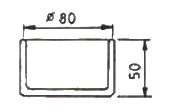
- 150
- 160
- 170
- 180
(정답률: 알수없음)
26. 블랭크 지름이 85mm이고, 제품의 지름이 55mm인 원통을 만들려고 한다. 드로잉률은 몇 % 인가?
- 55.4
- 64.7
- 69.3
- 72.8
(정답률: 알수없음)
27. 프로그레시브 금형에 대한 설명이다. 틀린 것은?
- 블랭킹, 피어싱을 연속적으로 할 수 있다.
- 파일럿 핀이 설치되어 있다.
- 스트리퍼가 없다.
- 다이 블록이 있다.
(정답률: 알수없음)
28. 다음 중 레이저 가공의 특징을 가장 잘 설명한 것은?
- 가공면은 섬세하나 정밀도가 비교적 낮다.
- 가공시 열에 의한 변형이 적다.
- 공구의 마모가 심하다.
- 수작업으로 이루어지므로 CNC 이용이 불가능하다.
(정답률: 알수없음)
29. 일반적으로 원통 슈퍼피니싱 가공에서 숫돌의 길이는 공작물 길이에 얼마로 하는가?
- 같게 한다.
- 1/4 로 한다.
- 1/6 로 한다.
- 1/8 로 한다.
(정답률: 알수없음)
30. 다음은 방전가공의 장점을 말한 것이다. 해당 되지 않는 것은?
- 가공 경화되기 쉬운 재료의 가공이 용이하다.
- 열에 의한 변형이 적어 가공 정밀도가 좋다.
- 전극 및 가공물에 큰 힘이 가해진다.
- 무인 운전이 가능하다.
(정답률: 알수없음)
31. 초음파 가공의 특징으로 틀린 것은?
- 가공 후 변형이 거의 없다.
- 공구 이외는 마모 부품이 없다.
- 표면 다듬질에는 이용할 수 없다.
- 유리, 수정, 루비 등의 재료를 가공할 수 있다.
(정답률: 알수없음)
32. 도전성의 가공물은 그 재질 및 경도에 관계없이 고정도의 가공이 가능하며 또한 가공액으로 물을 사용하므로 화재의 염려가 없어 야간 무인운전이 가능한 공작기계는?
- 밀링
- 공구 연삭기
- 브로우칭 머신
- 와이어 컷 방전가공기
(정답률: 알수없음)
33. 금속판의 두께는 변화시키지 않고 상하 반대로 여러 가지 모양의 요철을 만드는 가공은?
- 비딩가공
- 버링가공
- 엠보싱가공
- 피어싱가공
(정답률: 알수없음)
34. 다음 중 금형제작에 있어 전기화학 가공에 의한 방법에 속하지 않는 것은?
- 전해가공
- 버니싱가공
- 전해연마
- 전주가공
(정답률: 알수없음)
35. 치공구의 사용에 따른 장·단점으로 틀린 것은?
- 작업의 숙련도 요구가 감소한다.
- 가공 정밀도 향상으로 불량품을 방지한다.
- 가공시간을 단축하게 하여 제조비용을 절감할 수 있다.
- 호환성이 낮아지기 때문에 일체형 단일제품 제작에만 사용한다.
(정답률: 알수없음)
36. 지그의 손익분기점(N)의 계산식으로 옳은 것은? (단, Y : 지그 제작 비용, y : 1시간당 가공 비용, H : 지그를 사용하지 않을 때 1개당 가공 시간, HJ : 지그를 사용할 때 1개당 가공 시간)
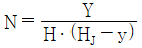
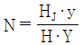
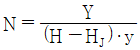
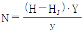
(정답률: 알수없음)
37. 한계 게이지 재료에 요구되는 성질로 틀린 것은?
- 열팽창 계수가 클 것
- 내마모성이 좋을 것
- 변형이 적을 것
- 정밀 다듬질이 가능할 것
(정답률: 알수없음)
38. 편측공차
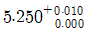
을 동등양측공차로 옳게 변환한 것은?- 5.255 ± 0.0⑤
- 5.255 ± 0.010
- 5.260 ± 0.0⑤
- 5.260 ± 0.010
(정답률: 알수없음)
39. 형판 지그(template jig)의 종류에 해당하지 않는 것은?
- 레이아웃 템플레이트 지그
- 평판 템플레이트 지그
- 앵거스 템플레이트 지그
- 원판 템플레이트 지그
(정답률: 알수없음)
40. 다음 중 표면거칠기 측정기가 옳게 나열된 것은?
- 삼선식, 촉침식
- 촉침식, 광파간섭식
- 광파간섭식, 스키드식
- 정적검출식, 촉침식
(정답률: 알수없음)
3과목: 임의 구분
41. 다음 중 KS규격에 따른 스퍼기어 및 헬리컬기어의 측정요소에 해당하지 않는 것은?
- 피치
- 잇줄
- 이형
- 유효지름
(정답률: 알수없음)
42. 수나사 골지름을 측정하려고 한다. 다음 중 계산식으로 옳은 것은? (단, M : 나사의 바깥지름, H : 나사산의 높이임)
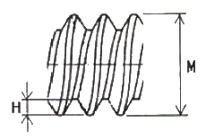
- 수나사 골지름 = M – 2H
- 수나사 골지름 = M – 4H
- 수나사 골지름 = M + 2H
- 수나사 골지름 = M + 4H
(정답률: 알수없음)
43. 사인바에 의한 각도측정시 45° 이상의 각도 측정에서 큰 오차가 발생하는 가장 타당한 이유는?
- 각도설정 오차함수가 탄젠트 함수로 되므로 45° 이상에서는 심한 오차가 발생하기 때문이다.
- 측정시 사인바를 설치할 때 자세에 의한 오차가 발생하기 때문이다.
- 사인바의 롤러 중심거리가 짧으므로 45° 이상에서 균형이 맞지 않기 때문이다.
- 사인바의 측정면의 정밀도가 45° 이상에서 저하되기 때문이다.
(정답률: 알수없음)
44.
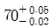
의 치수공차 표시에서 최대허용치수는?- 70.03
- 70.⑤
- 69.98
- 69.⑤
(정답률: 알수없음)
45. 다음 중 솔리드 모델링의 특징이 아닌 것은?
- 은선 제거가 가능하다.
- 불(Boolean) 연산(합, 차, 적)에 의하여 복잡한 형상표현이 어렵다.
- 형상을 절단하여 단면도 작성이 용이하다.
- 물리적 성질의 계산이 가능하다.
(정답률: 알수없음)
46. 다음 중 평판 디스플레이의 종류가 아닌 것은?
- 플라즈마 가스 방출형
- 래스터 스캔 형
- 액정형
- 전자 발광판형
(정답률: 알수없음)
47. 머시닝센터에서 가공물의 고정시간을 줄여 생산성을 높이기 위하여 자동으로 공작물을 교환하는 장치는?
- APT
- ATP
- ATC
- APC
(정답률: 알수없음)
48. 1500rpm 으로 회전하는 스핀들에서 2회전 드웰(dwell)을 주려고 할 때 정지시간은?
- 0.⑤초
- 0.08초
- 1.2초
- 1.5초
(정답률: 알수없음)
49. CNC 공작기계에서 제어의 3가지 방식이 아닌 것은?
- 위치결정제어
- 서보기구제어
- 윤곽절삭제어
- 직선절삭제어
(정답률: 알수없음)
50. 다음 중 물리량의 변화를 기본 전기회로의 전원과 같이 스스로 전위차를 줄 수 있는 기전력의 값으로 표현되는 센서는?
- 서미스터
- CdS
- 열전쌍
- 바이메탈
(정답률: 알수없음)
51. 다음 그림과 같은 기호로 표현되며, 조작 후에 손을 떼면 접점은 그대로 유지되지만 조작부분은 본래의 상태로 복귀되는 스위치는?
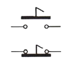
- 복귀형 스위치
- 근접 스위치
- 잔류형 스위치
- 리미트 스위치
(정답률: 알수없음)
52. 다음 중 공압 시스템에서 수분에 의한 고장으로 보기 어려운 것은?
- 밸브의 고착
- 갑작스런 압력강하
- 부식 작용에 의한 손상
- 에멀션화에 의한 밸브 오동작
(정답률: 알수없음)
53. 다음 중 자동화 시스템에서 컴퓨터 통합 생산시스템을 지칭하는 것은?
- CAD
- CIM
- MRP
- FMC
(정답률: 알수없음)
54. 다음 중 릴레이 제어와 비교한 PLC 제어의 특징에 해당 되는 것은?
- 제어의 변경을 프로그램 변경만으로 가능하다.
- 접점 마모/융착 등의 접촉 불량으로 신뢰성이 낮다.
- 제어반의 크기가 크다.
- 정기 점검 및 보수를 필요로 하며 고장부위 발견이 어렵다.
(정답률: 알수없음)
55. 모든 작업을 기본동작으로 분해하고, 각 기본 동작에 대하여 성질과 조건에 따라 미리 정해 놓은 시간치를 적용하여 정미시간을 산정하는 방법은?
- PTS법
- WS법
- 스톱워치법
- 실적자료법
(정답률: 알수없음)
56. 일반적으로 품질코스트 가운데 가장 큰 비율을 차지하는 코스트는?
- 평가코스트
- 실패코스트
- 예방코스트
- 검사코스트
(정답률: 알수없음)
57. 일정 통제를 할 때 1일당 그 작업을 단축하는데 소요되는 비용의 증가를 의미하는 것은?
- 비용구배(Cost slope)
- 정상소요시간(Normal duration time)
- 비용견적(Cost estimation)
- 총비용(Total cost)
(정답률: 알수없음)
58. 다음 중 데이터를 그 내용이나 원인 등 분류 항목별로 나누어 크기의 순서대로 나열하여 나타낸 그림을 무엇이라 하는가?
- 히스토그램(histogram)
- 파레토도(pareto diagram)
- 특성요인도(causes and effects diagram)
- 체크시트(check sheet)
(정답률: 알수없음)
59. c 관리도에서 k = 20인 군의 총부적합(결점)수 합계는 58 이었다. 이 관리도의 UCL, LCL을 구하면 약 얼마인가?
- UCL = 6.92, LCL = 0
- UCL = 4.90, LCL = 고려하지 않음
- UCL = 6.92, LCL = 고려하지 않음
- UCL = 8.01, LCL = 고려하지 않음
(정답률: 알수없음)
60. 로트로부터 시료를 샘플링해서 조사하고, 그 결과를 로트의 판정기준과 대조하여 그 로트의 합격, 불합격을 판정하는 검사를 무엇이라 하는가?
- 샘플링검사
- 전수검사
- 공정검사
- 품질검사
(정답률: 알수없음)